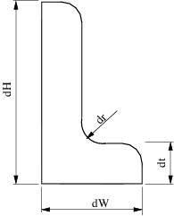
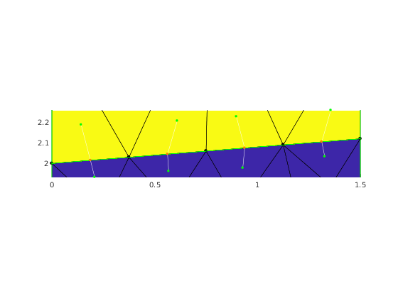
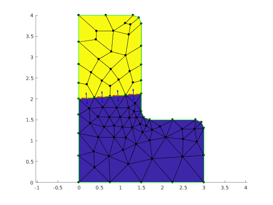

Queries about subdomain interface in L-Shape model
Contents
Summary of the demo
This demo is a comprehensinve illustration of MESH API for dealing with geometric and topological queries. In particular it shows:
- How to manage parameters of geometric model for L-Shape with interface
- How to setup meshing parameters on L-Shape interface
- How to print summary about mesh regions
- How to get region ID given its name
- How to get IDs of 1-D elements on interface
- How to get IDs of edges corresponding to elements on interface
- How to label edges and faces
- How to access adjacency information, in particular between edges and faces
- How to nodes of element set
- How to find to which regin given face belongs
- How to find normal and tanget vectors on the specific sides of face
Important remark
For the understanding of the demo it is important to keep in mind the fact that Mesh class provides in fact dual representation of the mesh. Both represenations are compatible but server somehow different purpses.
The first representation is build as the image of GMSH mesh file. It consist of three data structures for: nodes, elements and regions. The important fact is that if geometric domain defines regions of different dimension, that is phisical points, lines, surfaces or volumes, then the set of elements will also contain elements of different dimension. The will be segments, triangles, quads, tetrahedrons, hexahedrons and so on. It is important to note that all of them are called elements.
The second representation is base on a hierarchy of topological mesh entities. These entities are: vertices, edges, faces, cells. They are linked by incidence relations, that is vertices are bouding entities for edges, edges are bounding entities for faces, faces are bounding entities for cells. This topological representation is accessible as Adjacency objects. For instance:
e2v = mesh.getAdjacency(mp.Topo.Edge, mp.Topo.Vertex)
returns Adjacency object that for each edge lists the vertices belonging to the edge. Mesh class support all combination of first order adjacency relations. They are evaluated in lazy maner, that is they are calculated on the first request for them and stored for further use.
Mesh class provides methos to map one representation to the other, for instance to find to which element give face corresponds.
Geometric model with interface
LShapeIfaceGeom class provides geometric model with internal boundary (called interface). The user can set the plcement of the interface with some restricted way by varying parameters fA and fB in the range (0, 1).
clear variables;
Create Mesher object
When Mesher object is created it takes care of initializing interface to GMSH mesh generator
mesher = mp.Mesher();
Create object describing geometric model
geom = mp.geoms.LShapeIfaceGeom('my_domain'); geom.params.dW = 3; geom.params.dH = 4; geom.params.dt = 1.5; % Relative placement of interface endpoints. geom.params.fA = 0.5; geom.params.fB = 0.2; % The mesh in the upper subdomain will consist of quad elements. geom.params.quads = [0, 1];
Refine the mesh around interface
geom.setInterfaceLcFactor(0.5);

Generate mesh
mesh = mesher.generate(geom, struct('lc', 0.8));
Visualize mesh
The simplest way to visualize mesh is to use Viewer class.
viewer = mp.Viewer(); viewer.show(mesh);
Report regions
mesh.printRegions();
Region name | ID | dim
--------------------------------
b_bottom | 3 | 1
b_left_top | 4 | 1
b_left_bottom | 5 | 1
b_other_bottom | 6 | 1
b_other_top | 7 | 1
i_interface | 8 | 1
d_subBottom | 1 | 2
d_subTop | 2 | 2
Accessing mesh entites on interface region
Getting interface region ID.
selector.name = {'i_interface'};
iID = mesh.findRegions(selector);
%
% Find Id of elements on interface.
iElems = mesh.findElems(struct('region', iID));
fprintf('Number of elements on interface: %d\n', length(iElems));
h = mp_plot_edges(gca, mesh.nodes, mesh.elements, struct('region', 6));
set(h, 'EdgeColor', 'red', 'LineWidth', 2);
edges = mesh.edgesFromElems(iElems);
viewer.labelEdges(edges);
viewer.stackFigure();
viewer.show(mesh);
viewer.labelEdges(struct('id',edges, 'labels',iElems));
viewer.labelElements(struct('asFaces', true));
inodes = mesh.elemNodes(iElems);
viewer.highlight_nodes(inodes);
e2f = mesh.getAdjacency(mp.Topo.Edge, mp.Topo.Face);
fprintf('\nName of regions adjacent to interface edges:\n')
for e = edges
adjFaces = e2f.at(e);
if length(adjFaces) ~= 2
error('Interface edge has only one adjacen face');
end
r1 = mesh.getFaceRegion(adjFaces(1));
r2 = mesh.getFaceRegion(adjFaces(2));
fprintf('Edge %d %20s %20s\n', e, mesh.getRegionName(r1), mesh.getRegionName(r2));
end
viewer.stackFigure();
viewer.show(mesh);
bbox = mp.BBox(mesh.nodes(inodes,:));
for e = edges
adjFaces = e2f.at(e);
pe = mesh.edgeCenters(e);
pf1 = mesh.faceCenters(adjFaces(1));
pf2 = mesh.faceCenters(adjFaces(2));
showConnector(viewer, pf1, pf2, pe);
bbox.update(pf1);
bbox.update(pf2);
end
axis(bbox.extents);
viewer.stackFigure();
viewer.show(mesh);
nedges = length(edges);
% Preallocate arrays for tangent vectors, normal vectors, and anchor points
tan = zeros(2*nedges, 3);
nor = zeros(2*nedges, 3);
quiverPoint = zeros(nedges, 3);
% Fill the the arrays
k=0;
for e = edges
adjFaces = e2f.at(e);
for j=1:2
[n, t] = mesh.csAtEdgeInFace(e, adjFaces(j));
fc = mesh.faceCenters(adjFaces(j));
ec = mesh.edgeCenters(e);
quiverPoint(j+2*k, :) = ec+(ec-fc)*0.1;
tan(j+2*k, :) = t;
nor(j+2*k, :) = n;
end
k=k+1;
end
hold on;
quiver(quiverPoint(:,1), quiverPoint(:,2), tan(:,1), tan(:,2), 0.3, 'LineWidth', 1, 'Color', 'red');
quiver(quiverPoint(:,1), quiverPoint(:,2), nor(:,1), nor(:,2), 0.3, 'LineWidth', 1, 'Color', 'blue');
Number of elements on interface: 4 Name of regions adjacent to interface edges: Edge 41 d_subBottom d_subTop Edge 81 d_subBottom d_subTop Edge 86 d_subBottom d_subTop Edge 44 d_subBottom d_subTop 
Internal management of demo
mp_manage_demos('report', 'LShapeIfaceGeom_queries', true);
Helper functions
function showConnector(viewer, pt1, pt2, pc) endsSpec = struct('PointSize', 10, 'Color', 'green'); centerSpec = struct('PointSize', 10, 'Color', 'orange'); viewer.showLine(pc, pt1, struct('Color', 'white')); viewer.showLine(pc, pt2, struct('Color', 'white')); viewer.showPoints(pt1, endsSpec); viewer.showPoints(pt2, endsSpec); viewer.showPoints(pc, centerSpec); end